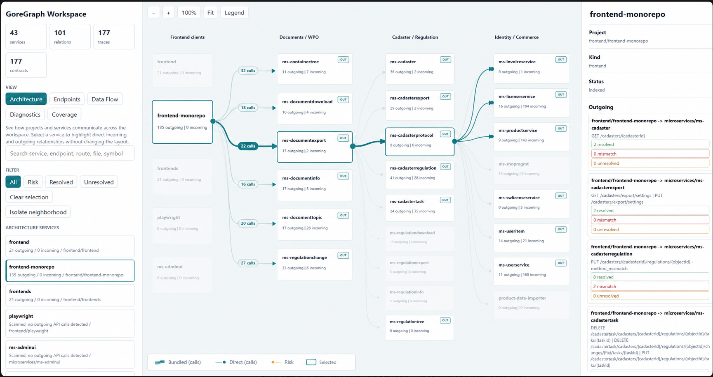
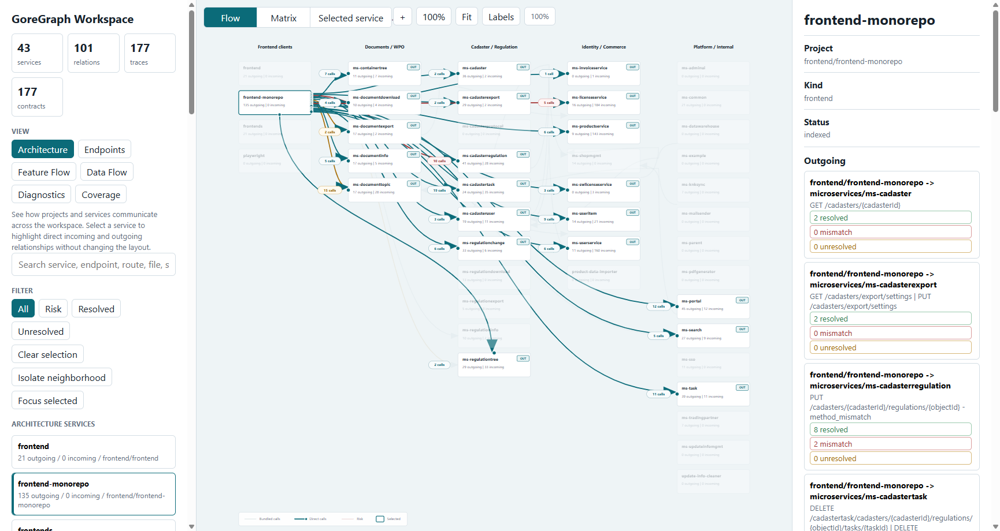
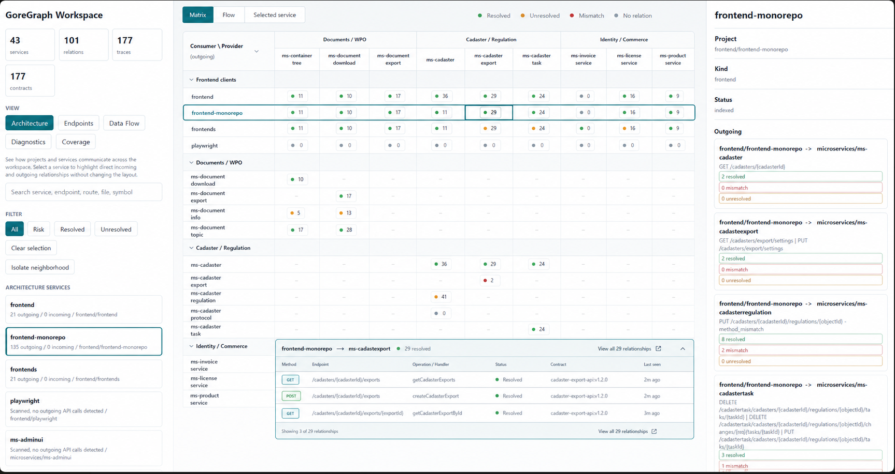
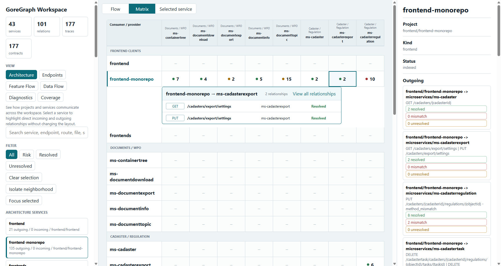

<!doctype html>
<meta charset="utf-8">
<title>GoreGraph architecture comparison</title>
<style>
  body { margin: 0; background: #111; color: #fff; font: 14px "Segoe UI", sans-serif; }
  .pair { display: grid; grid-template-columns: 1fr 1fr; gap: 8px; padding: 8px; }
  figure { margin: 0; padding: 8px; background: #222; }
  figcaption { margin-bottom: 8px; font-weight: 700; }
  img { display: block; width: 100%; height: auto; }
</style>
<section class="pair">
  <figure><figcaption>Reference — Flow</figcaption></figure>
  <figure><figcaption>Implementation — Flow</figcaption></figure>
</section>
<section class="pair">
  <figure><figcaption>Reference — Matrix</figcaption></figure>
  <figure><figcaption>Implementation — Matrix</figcaption></figure>
</section>
